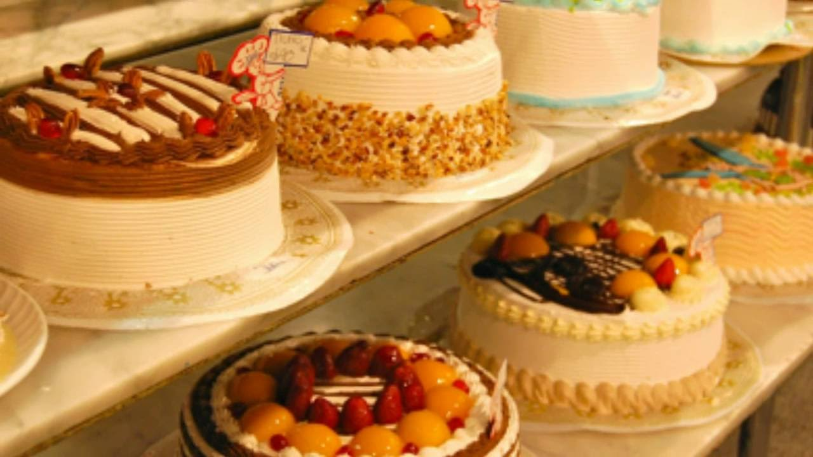
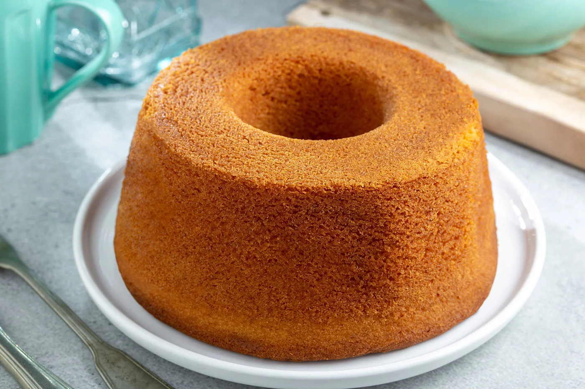

🍰Resposteria
💶Credito
📞Contacto
Bienvenido a la mejor resposteria del Pais
La repostería es considerada como un tipo específico de gastronomía, es decir, como una rama de la
cocina profesional, que se especializa en la elaboración de postres.Al igual que la gastronomía, la
excelencia en el oficio de la repostería se debe al conocimiento y buen uso de las técnicas. Dependiendo
de ello, la calidad del resultado puede variar.
Asimismo, también se guarda extremo cuidado con la presentación y decoración de los platos. Se exploran,
por lo tanto, colores, formas y texturas que buscan despertar el apetito y la curiosidad del comensal.
En la repostería se usan diversos tipos de productos y materiales básicos. El que no puede faltar es el
endulzante principal. Casi siempre se usa el azúcar común, pero también se pueden usar productos como
miel, azúcar de caña, azúcar mascabada, endulzantes artificiales,
El arte de la repostería es muy antiguo, si bien ha tenido grandes transformaciones en la medida en que
se han ido descubriendo ingredientes como el azúcar refinado. Antes de eso, en el antiguo Egipto, por
ejemplo, se endulzaba con miel.
El oficio del pastelero aparece mencionado por primera vez en el año 1440, en una ordenanza municipal.
En esta época, fue célebre Carlos Payán, quien, en el siglo XIV, ya realizaba anotaciones de cómo
preparar el tocinillo del cielo, muy diferente al que conocemos hoy.
En el año 1556, se forma en Francia la primera corporación de pasteleros, con autoridad para otorgar el
grado de pastelero. En efecto, ya para el siglo XVI existía la concepción de un menú variado para comer,
compuesto de entrada, plato principal (carne o pescado) y postre. La palabra postre proviene, de hecho,
del término postrer, es decir, es el postrer plato de una comida.
Existe una clasificación básica de repostería, que abarca las categorías de pasteles, gelatinas y
flanes. Veamos.
Existe una clasificación básica de repostería, que abarca las categorías de pasteles, gelatinas y
flanes. Veamos:
Pasteles: se trata de todos los postres elaborados a base de harina y manteca.  Esto abarca una
gran
variedad de productos y presentaciones: tartas, pasteles fríos, pasteles esponjosos, pasteles húmedos,
hojaldres, masa quebrada, bizcochos, etc.
Gelatinas: estas son de muy fácil confección, excepto las técnicas de decoración, que son bastante
complejas. Se pueden realizar con gelatina animal o vegetal (agar-agar).
Flanes: los flanes son mezclas que cuajan con una textura similar a la gelatina, pero están hechos a
base de huevo. Sus técnicas son bastante más complejas que las de la gelatina, de hecho, y lleva
bastante tiempo de elaboración. Puede llevar también leche o un sustituto, como el yogur y el café.
Diferencia entre repostería y pastelería
El término pastelería puede funcionar también como un sinónimo de repostería. Sin embargo, repostería es
más específico, puesto que pastelería tiene a su vez el significado de "tienda de despacho de dulces".
En este sentido, muchas pastelerías funcionan también como panaderías.
Algunos también distinguen la pastelería de la repostería, al limitar el concepto de pastelería al
oficio de preparar todo tipo de pasteles, mientras que dan a la repostería el concepto amplio de
elaborar todo tipo de postres, incluidos los pasteles.
El bizcocho es un delicioso postre de origen español que ha conquistado los paladares de muchas personas
en todo el mundo. Su historia se remonta a la época de la Edad Media, cuando los árabes introdujeron en
la península ibérica la técnica de batir huevos y azúcar para elaborar pasteles.

Mi experiencia con el bizcocho ha sido siempre muy positiva. Recuerdo la primera vez que lo probé, su
esponjosidad y su sabor dulce me conquistaron por completo. Desde entonces, he aprendido a prepararlo en
casa siguiendo recetas tradicionales y también experimentando con ingredientes nuevos.
Para lograr un bizcocho perfecto, es importante seguir algunos consejos. Primero, es fundamental batir
bien los huevos con el azúcar hasta que la mezcla esté espumosa y haya duplicado su volumen. Luego, se
añaden la harina y la levadura tamizadas, mezclando con movimientos envolventes para que la masa no
pierda aire.
Otro consejo importante es precalentar el horno a la temperatura adecuada y utilizar un molde
previamente engrasado y enharinado para que el bizcocho no se pegue. Además, es importante no abrir el
horno durante la cocción para evitar que el bizcocho se baje.